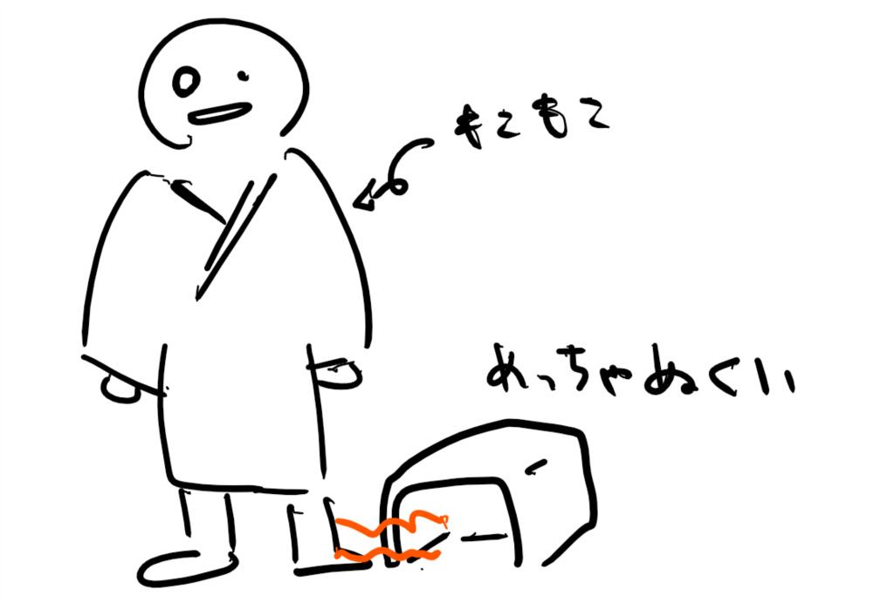

褞袍＋足ヒーターで寒さに備える
公開日：
そろそろ寒くなってきたのですが、今年はあんまりエアコンをつけずに過ごしたいなーってのもあって、丹前を買ってみました。
寒い季節になると温泉で貸し出される布地の厚い浴衣のような着物が丹前です。浴衣の上から羽織り、丹前の上から帯を締めるのが普通です。寒い冬をゆったりと暖かく過ごす工夫が成されています。
要するに褞袍（どてら）です。
![[26000]綿入り前合わせ久留米長丹前 (104)](https://images-fe.ssl-images-amazon.com/images/I/419PayByVhL._SL160_.jpg "[26000]綿入り前合わせ久留米長丹前 (104)")
ひざ下までちゃんとあるのがほしかったのですが、これは割とぴったりでした。欲を言えばもう少し合わせに余裕があればなーって感じですけど。丹前には"丹前帯"という専用（？）の帯もあるそうですが、ウチは兵児帯をしめています。この商品にはペアで二か所紐がついているので、別に帯はなくても大丈夫なんですけど、前がはだけないようにしてヌクヌクを逃がさないようにするには、帯があった方がいいかな。
これにひざ掛けがあれば無敵――と思ったのですが、足先はちょっと寒い。冬用のスリッパでも、体温でなかが温まるまでにはちょっと時間がかかる。
そこで思い出したのが、土方時代、プレハブ造りの会社事務所（暖房なし）で愛用していた足暖房。これがあれば最強な気がする。

残念ながら当時（もう15年前だな）愛用していた商品は見つからなかったのですが、代わりにちょいエコな感じのヤツを見つけました。

d-design セラミックヒーター 足元 活性炭フィルター付き ブラウン CHMS-011 BR
- 出版社/メーカー: ドウシシャ
- メディア: ホーム&キッチン
- この商品を含むブログを見る
そんなにパワーがない点を「足湯のような温かさ」と表現するマーケティングセンスはなかなかいいと思いました（棒
いや、これでも十分ですよ。しいて言えば、足で操作したいのにボタンが押しにくい。昔使ってたやつは暖房の強さを右側の大きなダイアルで操作できるようになっていて、それが足でもグリグリと回せて最強だったのだけど、それには及ばない感じ。
あと、ハコに足を突っ込むというスタイルなせいか、ちょっと不自由さがある。まぁ、こういう構造だからこそ、パワーがなくてもそこそこの温かさを実現できているのかもしれず、そこは汲んであげるべきかもしれない。
とりあえず、これで防御は完成された！ 冬よ、ござんなれって気分です。
追伸
LINE でおかんと話する機会があったので「これどうよ！」って見せたら、「デブ」と言われました。泣いてる。